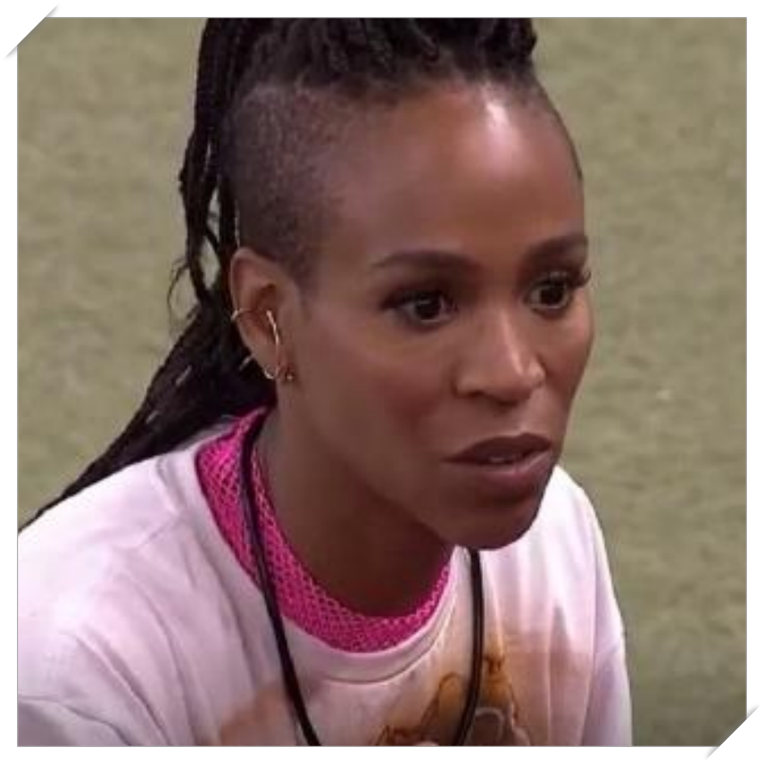
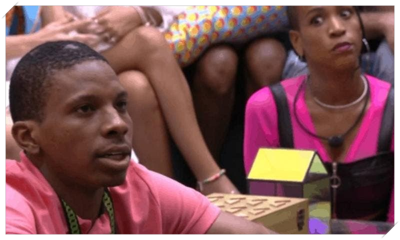

História Cancelamento Memes Top 10 músicas Redes Sociais Podcasts
Nos discursos de apresentação dos participantes do BBB 21 (Big Brother Brasil 2021), a rapper curitibana Karol Conká foi uma das únicas que não mencionou o medo do cancelamento. Enquanto vários jogadores entraram com uma postura defensiva, com receio do tribunal da internet, ela optou pela estratégia contrária. Mas não deu certo: Karol Conká é a primeira cancelada do BBB 2021. Em pouco mais de uma semana de jogo, Karol Conká já foi acusada de xeonofobia e tortura psicológica.
Não existe uma única explicação para responder a questão. Mas sempre que a língua afiada dela entra em ação a internet fica em polvorosa. Karol Conká e uma das jogadoras mais comentadas da temporada 2021, mas as reações predominantes são negativas.No segundo dia de confinamento, ela se apresentou aos demais participantes dizendo que não tinha medo de ser cancelada e se mostrando disposta a dividir, aprender e se corrigir.No terceiro dia de jogo, a primeira festa: com o clima da casa ainda amistoso, Karol Conká foi uma das estrelas da festa Réveillon BBB. Ela chegou a cantar seu principal hit, 'Tombei', animando e divertindo os concorrentes.Futuramente, o refrão da música daria a Karol Conká um dos apelidos pelo qual é chamada pelo pública: Jaque Patombá. O nome faz referência à queda de popularidade dentro e fora da casa do BBB 21: 'já que é pra tombar, tombei'.


A partir de então, passou a ficar claro o incômodo entre Karol Conká e Juliette. No quarto dia de confinamento, em conversa com Thaís e Sarah, a rapper criticou a forma expansiva de comunicação da paraibana.“As pessoas me dizem: 'mas é o jeito dela, porque lá na terra dessa pessoa, é normal falar assim”, explicou. A fala foi imediatamente apontada pela internet como uma postura de xenofobia. “Eu sou de Curitiba, que é uma cidade muito reservadinha. Por mais que eu seja artista, que eu rode o mundo, eu tenho os meus costumes. Eu tenho muita educação. Eu brinco, mas não invado e não desrespeito as outras pessoas”, disse Karol Conká.
A artista não foi repreendida pelas duas participantes do BBB 21 que compartilhavam a conversa. Thaís e Sarah assentiram com os argumentos apontados pela web como xenófobos. No caso, foi criticada a relação criada entre educação e costumes. Ao tratar de Juliette, ela atribuiu aos curitibanos a forma "educada" de tratamento, enquanto o jeito paraibano seria, na visão dela, "desrespeitoso". Posteriormente, em conversa com Lumena, Nego Di e Viih Tube, a rapper curitibana explicou que as brincadeiras infantis a incomodavam. “Tenho 35 anos. Sou mãe de um menino de 15 anos. Esse tipo de coisa eu acho bobo”, disse a Viih Tube, até então a principal aliada de Juliette.Karol Conká continuou o raciocínio afirmando que não sente sinceridade nas interações com a maquiadora paraibana. “Hoje de manhã, ela chegou na mesa, e passou por todo mundo beijando na testa. Na minha cabeça eu pensei assim: ‘É o beijo de Judas'”.

Passados dois dias, no primeiro final de semana da temporada 2021 do BBB, a festa de sábado foi palco de uma grande confusão generalizada. A treta foi armada por Lucas Penteado, que bebeu demais e importunou praticamente todos os jogadores.Primeiramente, ele abordou os participantes negros para formar uma aliança contra os brancos. Ninguém assentiu com a ideia e com a forma como Lucas se expressou. Na sequência, ele fez novas cobranças a Kerline, com quem já havia brigado na primeira festa.O clima durante a madrugada e a manhã de sábado (30) ficou péssimo em toda a casa. As brigas continuariam durante o domingo, dia em que foi formado o primeiro paredão do BBB 21 (Big Brother Brasil 2021).Entre os participantes que reagiram ao comportamento de Lucas Penteado, a rapper Karol Conká foi a mais agressiva. A reação foi tamanha a ponto dos fãs acusarem a curitibana de promover uma série de ataques morais e realizar tortura psicológica.
O ápice da divergência entre ambos ficou evidente na segunda-feira (1°), quando ela expulsou Lucas Penteado da cozinha do BBB 21.“Quero comer na paz. Não quero que você fale enquanto eu estou comendo. Só come depois que eu sair da mesa. Qualquer coisa me bota no paredão que eu tenho uma carreira bem bonita lá fora”, disse ela. Lucas Penteado deixou a cozinha pedindo desculpas, e comeu mais tarde, sozinho. “Come aí e quando você terminar, avisa”, disse o ator a caminho do quarto. Mesmo saindo do ambiente, ele continuou sendo alvo de Karol Conká.


No mesmo dia, em conversa com outros jogadores do BBB 21 (Big Brother Brasil), Karol Conká manteve a ofensiva contra Lucas Penteado e ameaçou agredi-lo quando saírem do reality show.“Eu não tenho dó desse cara porque ele não tem dó da gente. Ele está atuando! Então vamos jogar essa merda. Aqui eu não posso quebrar a cara dele, lá fora eu quebro. Pronto, não tem problema”, disparou Karol Conká, inflamando Lumena, Camilla de Lucas e Gilberto.Na segunda-feira (2), Karol Conká e Lucas Penteado fizeram as pazes. Após dias de tensão, a rapper procurou o ator e pediu desculpas. A internet acusou a artista de estar se desculpando como estratégia do jogo para evitar o cancelamento.“Você não é um merda. Foi só um jeito de falar”, continuou Karol Conká. “Vamos almoçar na paz de Jesus”, completou ela, lembrando a briga do dia anterior na cozinha, tentando colocar fim ao desentendimento.Lumena assentiu: “ele acha que é malandrão”, completou a psicóloga, que foi uma das últimas a apoiar Lucas Penteado no BBB.
Diante das atitudes da artista na casa do BBB 21 (Big Brother Brasil), o Festival Rec-Beat decidiu suspender o show de Karol Conká por considerar as condutas dela inadequadas. A informação foi confirmada na segunda (2).No entanto, a organização do evento já avaliava a decisão havia alguns dias, após a cantora curitibana ter sido acusada de xenofobia contra Juliette, que é paraibana. As novas brigas com Lucas foram a gota d'água.


Nem no amor Karol Conká tem conseguido se afastar da onda de cancelamento. Na tentativa de ficar com Arcrebiano (Bill), a rapper tem sido acusada de constranger e encurralar o educador físico, que não demonstrou reciprocidade ao desejo. Além disso, a web aponta que a postura da cantora também tem como objetivo afastar outras mulheres de um possível relacionamento com Bill, que já disse literalmente que não tem vontade de ficar com ela. Nos últimos dias, Karol Conká tem insistido no contato físico e na aproximação forçada. Em dado momento ela chegou a deitar na rede onde o Bill dormia. Além disso, a artista tem caprichado nas fotos e insistido que ela a concedesse uma "flechada" no Feed BBB.Na festa desta quarta-feira (3), a artista voltou a investir em Bill, inicialmente sem sucesso. Depois de muita conversa e troca de carícias, o beijo saiu.
